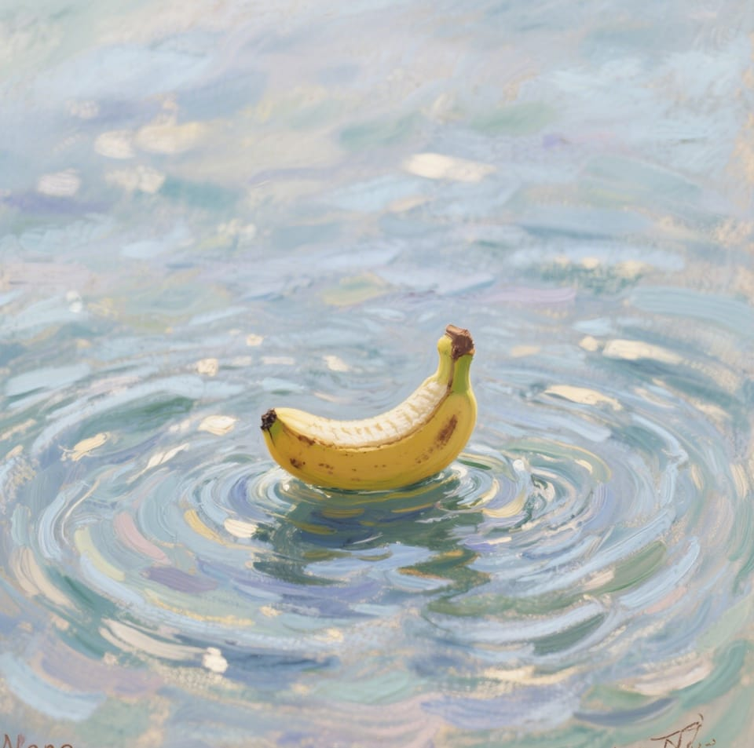

Click anywhere to close · Esc
Nano Banana 2 itself does not run locally: it is Google's hosted Gemini 3.1 Flash Image model. You can call it from a local Python script, or self-host a separate open-weight alternative such as Qwen-Image-Edit-2511, HiDream-O1-Image, or HunyuanImage 3.0. This independent guide keeps those two routes separate.
Model selection checked : Google now recommends Nano Banana 2.1 for new projects. Nano Banana 2 examples here remain explicitly versioned; a newer API model does not change the cloud/local distinction.

Validate text‑guided image editing in minutes. Try real prompts and compare outputs.
| Your requirement | Where inference runs | Next step |
|---|---|---|
| Use Nano Banana without a local GPU | Google's cloud; your computer runs the API client | Set up the Python client |
| Keep inference on your own hardware | A separate open-weight model on your machine | Choose an offline model and check its requirements |
| Run open weights without owning suitable GPUs | A rented machine, not your local computer | Plan a cloud GPU deployment |
For privacy, hardware, cost and maintenance trade-offs, read cloud APIs versus local image models. A rental is still remote infrastructure, not an offline solution.
Nano Banana is a cloud image generation and editing route. This site separately covers self-hosted alternatives and links to their official weights, licenses, and setup instructions. Compare the routes without confusing a local API client with a locally running model.
Our first-party comparisons publish inputs and settings where they are available. The broader leaderboard is a dated snapshot from Artificial Analysis and is labeled as third-party data. Treat model rankings as changing evidence, not permanent product claims.
Inspect a disclosed editing example or learn how to interpret image-model Elo scores.
Use text and image inputs to request changes such as background replacement or object removal. “Targeted” describes the edit area; it does not mean the Google model runs on-device.
Inspect character consistency and scene preservation with disclosed inputs and prompts. Treat outputs without complete run metadata as examples, not rankings.
We publish inputs and settings that were actually retained, and explicitly identify missing model versions, parameters, masks, or selection records.
Use a lightweight Python client for Google's cloud model, or follow an official repository for true offline inference. Hardware needs vary dramatically by open model.
Request outfit, background, or lighting changes, then check identity details across multiple outputs.
Test background replacement, props, and targeted retouching while reviewing product shape, labels, and lighting.
Iterate banners and posters, then verify subject pose, typography, trademarks, and visual artifacts.
Draft visual variants for blogs and social media while keeping a human quality and rights check in the workflow.
Model identity, licensing, release status, and setup commands should link to the provider's documentation, repository, or model card.
Rankings, pricing, and availability change. We date snapshots and avoid presenting volatile values as permanent facts.
We publish attributable user feedback or reproducible tests—not anonymous marketing quotes presented as customer evidence.